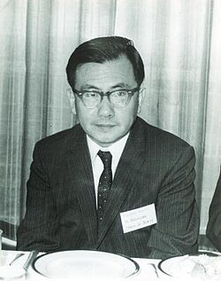

Kunihiko Kodaira | |
|---|---|
小平 邦彦 | |
 | |
| Born | March 16, 1915 Tokyo, Japan |
| Died | July 26, 1997 (aged 82) |
| Alma mater | University of Tokyo |
| Known for | Algebraic geometry, complex manifolds, Hodge theory |
| Awards | Fields Medal (1954) Japan Academy Prize (1957) Order of Culture (1957) Wolf Prize (1984/5) |
| Scientific career | |
| Fields | Mathematics |
| Institutions | University of Tokyo Institute for Advanced Study Johns Hopkins University Princeton University Stanford University |
| Shokichi Iyanaga | |
Doctoral students | Walter Lewis Baily, Jr. Shigeru Iitaka Yoichi Miyaoka James A. Morrow |
Kunihiko Kodaira (小平 邦彦, Kodaira Kunihiko; Japanese pronunciation: [kodaꜜiɾa kɯɲiꜜçi̥ko], 16 March 1915 – 26 July 1997) was a Japanese mathematician known for distinguished work in algebraic geometry and the theory of complex manifolds, and as the founder of the Japanese school of algebraic geometers.[1] He was awarded a Fields Medal in 1954, being the first Japanese national to receive this honour.[1]
Kunihiko Kodaira was born in Tokyo on Tuesday, March 16, 1915. He graduated from the University of Tokyo in 1938 with a degree in mathematics and also graduated from the physics department at the University of Tokyo in 1941. During the war years he worked in isolation, but was able to master Hodge theory as it then stood. He obtained his PhD from the University of Tokyo in 1949, with a thesis entitled Harmonic fields in Riemannian manifolds.[2] He was involved in cryptographic work from about 1944, while holding an academic post in Tokyo.
In 1949 he travelled to the Institute for Advanced Study in Princeton, New Jersey at the invitation of Hermann Weyl. He was subsequently also appointed Associate Professor at Princeton University in 1952 and promoted to Professor in 1955. At this time the foundations of Hodge theory were being brought in line with contemporary technique in operator theory. Kodaira rapidly became involved in exploiting the tools it opened up in algebraic geometry, adding sheaf theory as it became available. This work was particularly influential, for example on Friedrich Hirzebruch.
In a second research phase, Kodaira wrote a long series of papers in collaboration with Donald C. Spencer, founding the deformation theory of complex structures on manifolds. This gave the possibility of constructions of moduli spaces, since in general such structures depend continuously on parameters. It also identified the sheaf cohomology groups, for the sheaf associated with the holomorphic tangent bundle, that carried the basic data about the dimension of the moduli space, and obstructions to deformations. This theory is still foundational, and also had an influence on the (technically very different) scheme theory of Grothendieck. Spencer then continued this work, applying the techniques to structures other than complex ones, such as G-structures.
In a third major part of his work, Kodaira worked again from around 1960 through the classification of algebraic surfaces from the point of view of birational geometry of complex manifolds. This resulted in a typology of seven kinds of two-dimensional compact complex manifolds, recovering the five algebraic types known classically; the other two being non-algebraic. He provided also detailed studies of elliptic fibrations of surfaces over a curve, or in other language elliptic curves over algebraic function fields, a theory whose arithmetic analogue proved important soon afterwards. This work also included a characterisation of K3 surfaces as deformations of quartic surfaces in P3, and the theorem that they form a single diffeomorphism class. Again, this work has proved foundational. (The K3 surfaces were named after Ernst Kummer, Erich Kähler, and Kodaira).
Kunihiko Kodaira left Princeton University and the Institute for Advanced Study in 1961, and briefly served as chair at the Johns Hopkins University and Stanford University. In 1967, he returned to the University of Tokyo. He was awarded a Wolf Prize in 1984/5. He died in Kofu on Saturday, 26 July 1997 at the age of eighty-two.
He was honoured with the membership of the Japan Academy, the Mathematical Society of Japan and the American Academy of Arts and Sciences in 1978. He was the foreign associate of the US National Academy of Sciences in 1975, member of the Göttingen Academy of Sciences in 1974 and honorary member of the London Mathematical Society in 1979. He received the Order of Culture and the Japan Academy Prize in 1957 and the Fujiwara Prize in 1975.
{kind=link}